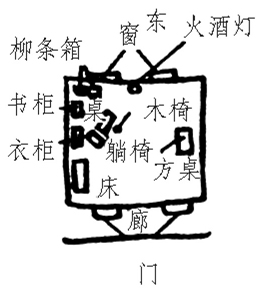

广平兄：
一日寄出一信并《莽原》两本，早到了罢。今天收到九月廿九的来信了，忽然于十分的邮票大发感慨，真是孩子气。花了十分，比寄失不是好得多么？我先前闻粤中学生情形，颇出于“意表之外”，今闻教员情形，又出于“意表之外”，我先前总以为广东学界状况，总该比别处好的多，现在看来，似乎也只是一种幻想。你初作事，要努力工作，我当然不能说什么，但也须兼顾自己，不要“鞠躬尽瘁”才好。至于作文，我怎样鼓舞，引导呢？我说：大胆做来，先寄给我！不够么？好否我先看，即使不好，现在太远，不能打手心，只得记账了，这就已可以放胆写来，无须畏缩了。称人“嫩弟”之罪，亦一并记在账上。

看起放大的住室来，似乎比我的阔些。我的房如上图，器具寥寥，皆以奋斗得来者也，所以只有半屋。但自从买了火酒灯之后，我也忙了一点，因为凡有饮用之水，我必煮沸一回才用，因为忙，无聊也仿佛减少了。酱油已买，也常吃罐头牛肉，何尝省钱！火腿我却不想吃，在西三条时吃厌了。在上海时，我和建人因为吃不多，只叫了一碗虾仁炒饭，不料又惹出影响，至于不在先施公司多买东西，孩子之神经过敏，真令人无法可想。相距又远，鞭长不及马腹，也还是姑且记在账上罢。
我在此常吃香蕉，柚子，都很好；至于杨桃，却没有见过，又不知道是甚么名字，所以也无从买，鼓浪屿也许有罢，但我还未去过，那地方无非像租界，我也无甚趣味，终于懒下来了。此地雨倒不多，只有风，现在还热，可是荷叶却干了，一切花，我大概不认识；羊是黑的。防止蚂蚁，我现也用四面围水之法，总算白糖已经安全；而在桌上，则昼夜总有十余匹爬着，拂去又来，没有法子。
我现在专取闭关主义，一切教职员，少与往来，也少说话。此地之学生似尚佳，清早便运动，晚亦常有；阅报室中也常有人，对我之感情似亦好，多说文科今年有生气了，我自省自己之懒惰，殊为内愧。小说史有成本；所以我对于编文学史讲义，不愿草率，现已有两章付印了，可惜此地藏书不多，编起来很不便。
西三条有信来，都平安的，煤已买，每吨至二十元。学校还未开课，北大学生去缴学费，而当局不收，可谓客气，然则开学之毫无把握可知。女师大的事，没有听到什么，单知道教员大抵换了男师大的，历史兼国文主任是白月恒（字眉初），黎锦熙也去教书了，[610]大概暂时当是研究系势力，总之，环境如此，女师大是不会单独弄好的。
季黻要送家眷回南，自己行踪未定，我曾为之写信向中日学院（在天津）设法，但恐亦无效。他也想赴广东，而无介绍，去看寿山，则他已经不在家了。此地总无法想，玉堂也不能指挥如意，许多人的聘书，校长压了多日才发下来。他是尊孔的，对于我和兼士，倒还没有什么，但因为化了这许多钱，汲汲乎要有成效，如以好草喂牛，要挤好牛乳一般。玉堂也略有此意，所以不日要开展览会，除学校自买之泥人而外，还要将我的石刻拓片挂出。其实这些古董，此地人那里会懂，无非胡里胡涂，忙碌一番而已。
在此地似乎刺戟少些，所以我颇能睡，但也做不出文章来，北京来催，只好不理；这几天觉得心绪也平稳些，大约有些习惯了。开明书店想我有书给他印，我还没有。对于北新，则我还未将《华盖集续篇［编］》整理给他，因为没有工夫。长虹和这两店，闹起来了，因为要钱的事。沉钟社和创造社，也闹起来了，现已以文章口角。创造社伙计内部，也闹起来了，已将柯仲平逐走，原因我不知道。
迅 十，四，夜。
注 释
[609] 此信经作者整理编辑收入《两地书》，序号五○。
[610] 白月恒（1875—？） 河北卢龙人。曾任国立东南大学教授、北京师范大学史地系主任、女师大史地学科主任。黎锦熙，参看本卷第76页注〔1〕。